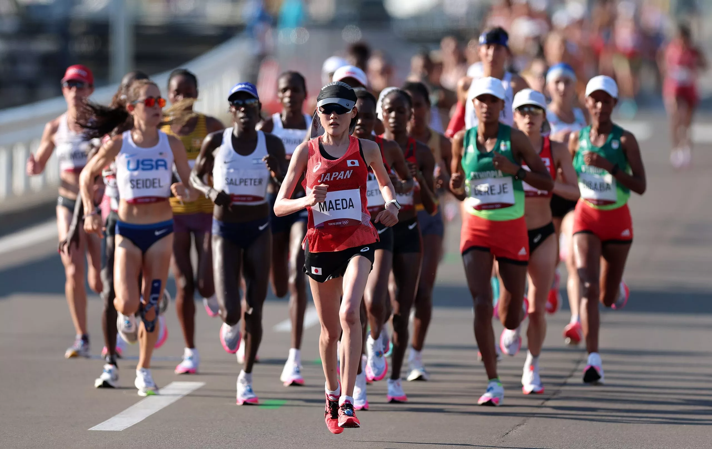
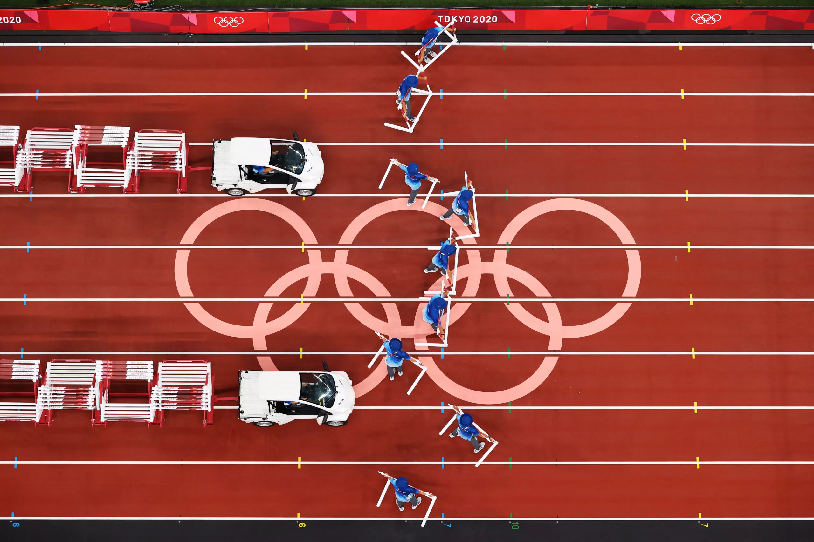
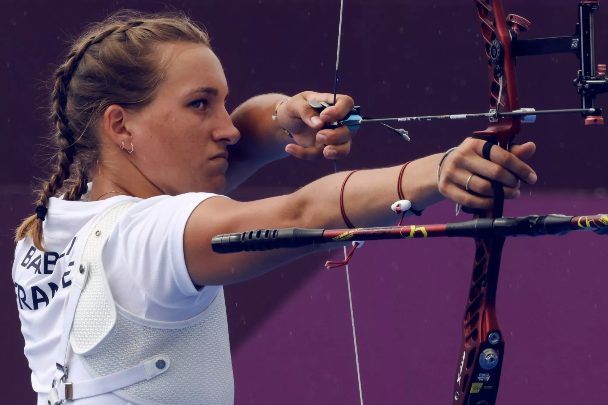
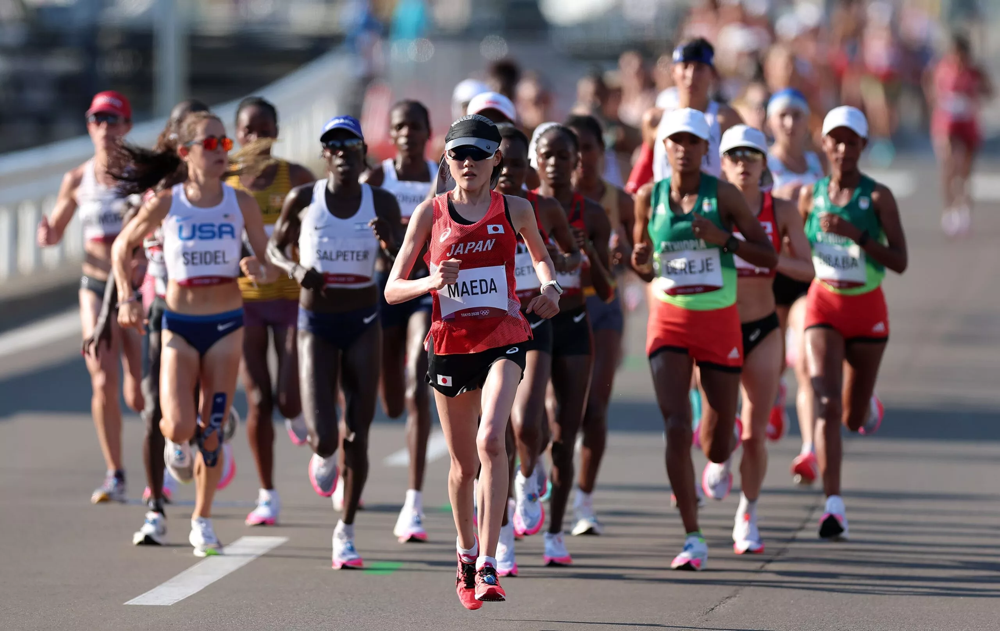
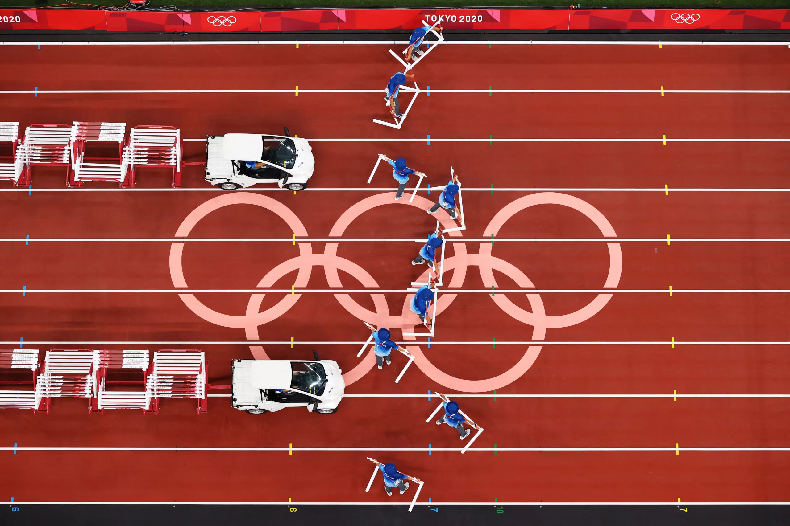
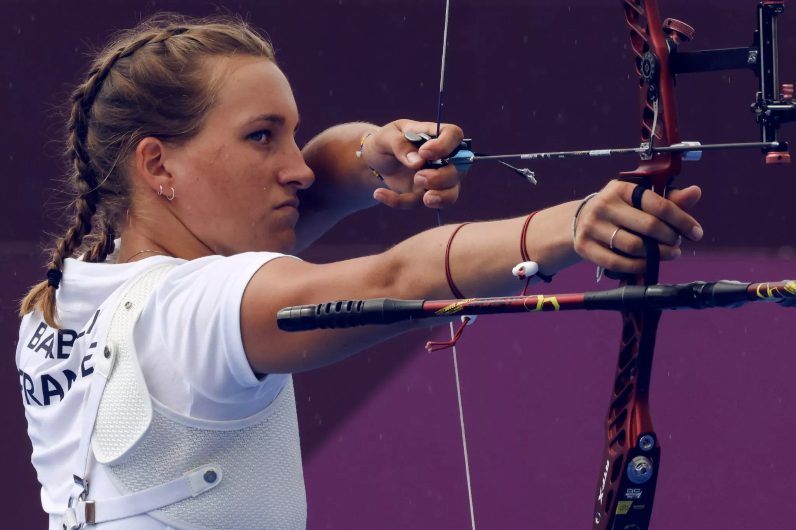

Kimberly García y Yulimar Rojas, nominadas a mejor atleta del año
Yulimar Rojas, de Venezuela, y Kimberly García, de Perú, son las reinas de ...
ver más 





La natación es uno de los deportes olímpicos más antiguos, ya que ha estado presente en todos los Juegos Olímpicos modernos desde Atenas 1896. La competición de natación de París 2024 contará con 852 atletas que competirán por las medallas en el Arena La Défense de París. A continuación encontrarás todo lo que necesitas saber sobre el número de atletas, el calendario y el camino hacia la clasificación.
ver másYulimar Rojas, de Venezuela, y Kimberly García, de Perú, son las reinas de ...
ver másA menos de dos años de los Juegos, se ha confirmado la ruta para el maratón olímpico de París 2024. Rinde homenaje a un momento clave de la Revolución Francesa: la Marcha de las Mujeres en Versalles, el 5 de octubre de 1789...
ver más45.000 voluntarios se involucrarán para hacer de los Juegos Olímpicos de París 2024 un evento inolvidable. Ayudarán a crear una atmósfera única que reunirá a todo el mundo para compartir esta experiencia. Juntos, organizaremos Juegos espectaculares. Entonces, ¡prepárate para postularte, a partir de marzo de 2023!
ver másA falta de dos años para los Juegos de París 2024, se ha publicado el calendario oficial de competición. Consulta el calendario completo para saber exactamente cuándo competirán los mejores atletas del mundo en eventos como los 100 m libres, los 400 m vallas, el maratón olímpico...
ver más